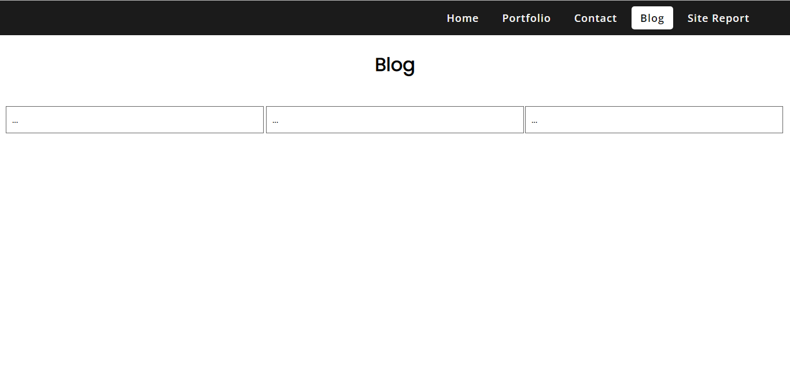
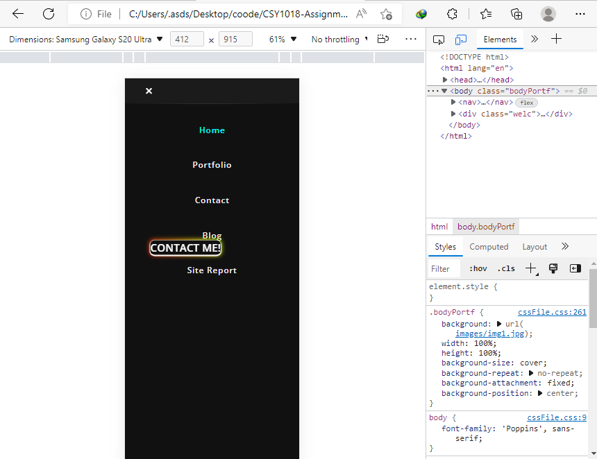

The assignment was given to showcase our individual portfolio for the assessment of Web-Development module. This report contains the designing process, ups and downs while designing the websites and validation images. This assignment also evaluates about the knowledge of Web-Development.
Aims & objectives
To know the basics of Web-development
To know about the use of GitHub
To know about responsive web designing
Designing process
For the designing process, I have used sans serif font as they are quite attractive. I have imported two fonts Open Sans and Poppins from google font.For hamburger icon, close-menu and social media icons, font-awesome has been used to import it using i class tag. For each page, the designing process is described below:
Home Page: For Home page, I have added simply added welcome text and contact button with simple dark background.
Portfolio Page: It contains simple four dummy images prepared by using grid property. The image hovers when the user rolls over the images. Also, the page has been made responsive for mobile view.
Contact Page: Here, form tag is used and when the user fills the given details, on clicking submit button, the details get sent to given email on action attribute. Also, the social media links has been placed just below form and has been centred. Here, I have used telephone background image relating to contact page.
Blog Page: This section contains three columns about the progress of my assignment as per the question created using flex property and here it contains short article about the assignment and it has also been made responsive.
Site Report Page: Here, I have set the animation on each headings using keyframe property cause transition from black, blue and red respectively. Here, I have decreased the size of image(width&height) using media query to make it responsive.
Experience
After completion of this assignment, I got to know about use of various HTML tags and various properties like flex, columns, grid etc which are commonly used in HTML. Also, it helped me to know about use of GitHub which is used by the programmers for tracking any changes in the code.
References
For navigation bar(code used in CSS file from css line 3-114):
CodingLab (2020) How to Create Responsive Navigation Bar With HTML & CSS in Hindi.YouTube [online]. Available from: https://www.youtube.com/watch?v=nKnrdABs7Zs[Accessed 18 July 2022].
For blog page 3 column layout:
SoftCode (2020) Responsive 3 Column Layout with CSS | CSS Responsive Layout. YouTube [online]. Available from: https://www.youtube.com/watch?v=OVINJ5qSp6o[Accessed 26 July 2022].
For background page of home and portfolio page:
Adrien Olichon (2018) Free Black Image On Unsplash. Unsplash [online]. Available from: https://unsplash.com/photos/_GH9LwhlSO4 [Accessed 30 July 2022].
For telephone image of contact page:
Katrin Hauf (2019) black rotatory phone on white table. Unsplash [online]. Available from: https://unsplash.com/photos/l5NYUg6bkFA [Accessed 30 July 2022].
For background of blog & site-report page:
Katrin Hauf (2020) white wall paint with black line photo. Unsplash [online]. Available from: https://unsplash.com/photos/R53t-Tg6J4c [Accessed 30 July 2022].
Progress images

Incomplete blog.html page

I had tried to set animation in contact me button on home page but due to issues here, I removed the glowing animation.